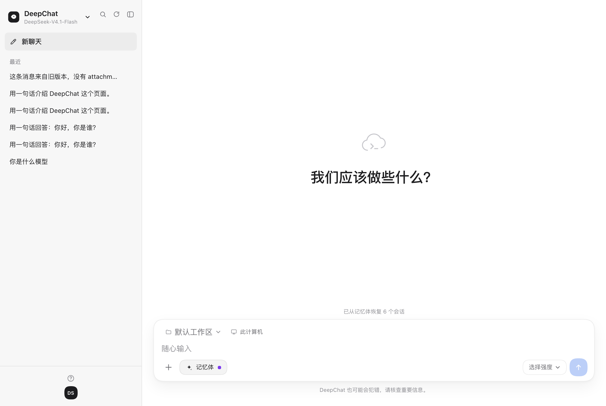
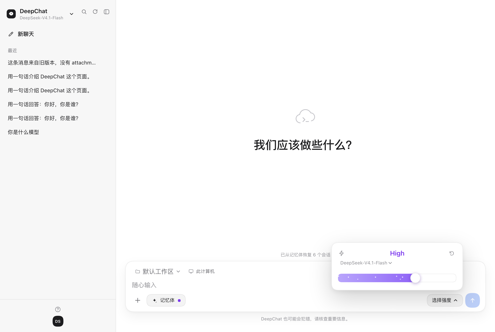
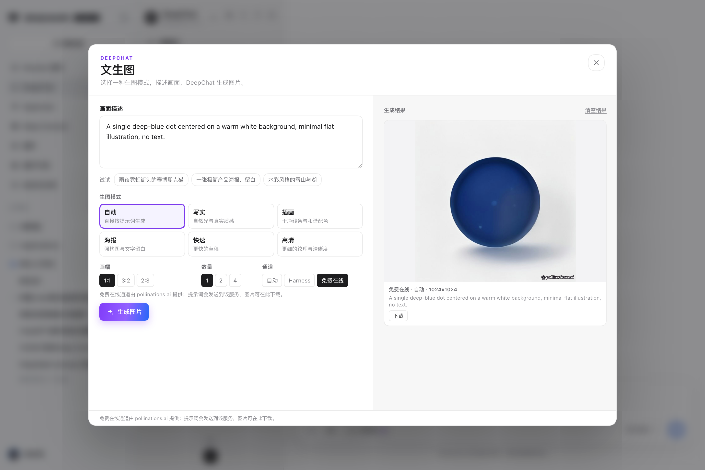
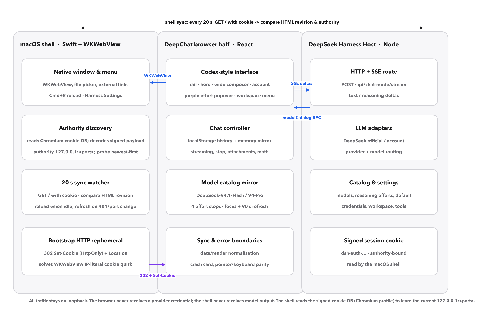

DeepChat: a local-first, model-synchronising macOS client for reasoning-effort-controlled conversational AI

(828 KB release zip)
automated checks
idle-only reloads
click → visible (mean)
The paper
DeepChat
Desktop clients for large language models usually couple three things that should be independent: a vendor cloud, a frozen model menu, and a coarse reasoning budget. DeepChat keeps the conversation local, treats the model menu as a live view of the host catalogue, and discovers the host's ephemeral loopback port from the authority inside its signed session cookie. The browser half never sees a provider key; the native shell never sees model output.
大语言模型的桌面客户端通常把三件本应独立的事情绑在一起：厂商云、冻结的模型菜单和粗粒度的推理预算。DeepChat 把对话留在本地，把模型目录当成 Host 的实时视图，并从签名会话 Cookie 里的 authority 自动发现 Host 的临时回环端口；浏览器半看不到提供商 Key，外壳看不到模型输出。
English pp. 1–10 · 中文 pp. 11–14 · Extended Data pp. 15–16 · references/back matter pp. 17–18. 7 figures, 11 tables, 58 verified references.
Model and host synchronisation
The catalogue is a view
The model menu is rendered from the host's authenticated RPC, not from a constant. A focus event, a 90 s timer or the top-bar button refreshes it; a refresh is skipped while an answer is streaming. In a real update the panel moved from DeepSeek-V41-Flash to DeepSeek-V4.1-Flash, with DeepSeek-V4-Pro in both provider groups, without a client release.
The port is an interface
A host that chooses an ephemeral loopback port is avoiding collisions, not being awkward. DeepChat decodes the authority from each signed dsh-auth-… cookie, probes candidates newest-first, and adopts the one that answers 200. The real migration 127.0.0.1:19387 → 127.0.0.1:53254 is the acceptance test.
A reload only when it is safe
A 20 s watcher compares the served HTML revision. A streaming answer, a draft or a pending attachment defers the reload; the next tick retries.
Reasoning effort is discrete
The drag is a presentation layer over the levels the model declares. For the current DeepSeek models that is four stops: Off, Low, High, Max. The value sent to the provider is always one of those levels.

Every visible control answers
The effort model line opens the model menu; the lightning boosts to maximum and back; the memory pill toggles with a filled/hollow dot; the avatar opens the account card; the workspace chip opens the host workspace list.
A trust boundary, not a black box
The browser half never sees a provider key; the native shell never sees model output. The shell reads only the authority and issue time from the local Chromium cookie database, and the page receives an HttpOnly cookie it cannot read from JavaScript. All traffic stays on loopback; unauthenticated requests return 401.
Reproducible by default
The repository contains the 141-check pipeline, the 59-check formatting suite, the raw latency JSON, the figure scripts and the paper source. The 18-page PDF is generated from the same HTML; no number in the paper is hand-typed into a chart.
Text to image
Six modes, two channels
The picture button in the rail or composer opens a text-to-image modal with
Auto, Photo, Illustration, Poster, Fast and HD modes, 1:1 / 3:2 / 2:3
aspect ratios and 1/2/4 images. Auto prefers a configured Harness image
model and falls back to the keyless free online channel; Harness uses the
registered image_generate tool; Free online calls
pollinations.ai directly.
The Harness channel needs a provider in Settings → Image generation and one Harness restart (the Host routes load with it). The free channel works immediately; prompts go to the free service and images can be downloaded.
The macOS app adds a native Generate image… menu item (⌘⇧I) that opens the same modal.


Quick start
1 · Install the Harness bundle
In a DSH session with the plugin manager available:
plugin_manager({ action: 'install_bundle',
target: '/absolute/path/to/deepchat/chat-mode' })
Manual fallback: cd ~/.dsh/profiles/desktop && pnpm add link:/absolute/path/to/deepchat/chat-mode, then restart Harness.
2 · Install the macOS app
Download DeepChat-1.3.0-macOS.zip from the latest release, unzip into /Applications, and open it. Or build:
cd deepchat-app ./build.sh --install open /Applications/DeepChat.app
Requires macOS 13+, Xcode Command Line Tools for building, and a logged-in DeepSeek Harness. The app is not sandboxed because it reads the local Harness cookie database.
Verification
Both offline suites pass on the released build: 141 pipeline checks and 59 formatting/decoding checks. The live audit adds 80 trials across eight interactions; auth is 200 with the current authority cookie and 401 without it. The paper's methods, raw samples and reproducibility table are in the PDF and in paper/data/.
node tools/chat-mode-check.mjs node tools/chat-mode-format-check.mjs
Cite
@software{deepchat2026,
author = {Zeng, Pu},
title = {DeepChat: a local-first, model-synchronising macOS client for
reasoning-effort-controlled conversational AI},
year = {2026},
version = {1.3.0},
url = {https://github.com/zengpu987-ctrl/deepchat},
note = {Preprint: paper/DeepChat-Nature-Bilingual-18p.pdf}
}